Сделать интерфейс для водителей быстрым и понятным, чтобы минимизировать время реакции на заказ и снизить количество ошибок при работе с приложением.
Case 03
TAXI TROIKA
Пересборка водительского приложения с фокусом на скорость принятия заказов, прозрачность сценария поездки и эффективность работы водителей.
Старый интерфейс был перегружен, не давал быстро ориентироваться в ситуации и не обеспечивал прозрачности в статусах поездки, из-за чего росло время реакции и количество отказов.
Аудитория продукта — водители такси, для которых важны скорость, простота и минимальное отвлечение от дороги. Интерфейс должен помогать принимать решения мгновенно и без лишнего чтения.
Интерфейс был выстроен вокруг основного сценария водителя — от получения заказа до его завершения. Экран с заказом стал максимально лаконичным: ключевая информация о поездке вынесена в центр внимания и легко считывается, а кнопка принятия заказа сделана заметной и доступной в один клик.
Карта стала основным элементом интерфейса, а маршрут — визуально понятным и читаемым. Это снизило нагрузку и помогло быстрее принимать решения в реальных условиях движения.
Статусы поездки были выстроены в логичную последовательность, где каждый этап сопровождается понятным действием. Благодаря этому сценарий стал предсказуемым, а водитель увереннее взаимодействует с приложением.
Дополнительно были собраны профиль водителя, история поездок, баланс и тарифы, чтобы управлять работой внутри одного интерфейса без лишних переходов.
Работа началась с анализа текущих сценариев и выявления точек замедления. Основной задачей было сократить количество действий и упростить восприятие информации.
Мы переработали структуру экранов, усилили визуальную иерархию и убрали лишние элементы, которые мешали быстрому принятию решений.
Особое внимание уделили экрану принятия заказа и отображению маршрута, так как именно эти элементы напрямую влияют на эффективность работы водителя.
В ходе редизайна были оптимизированы ключевые показатели: скорость реакции на заказ, количество действий до принятия и общее удобство взаимодействия. Основной фокус был на снижении когнитивной нагрузки и повышении скорости выполнения ключевого сценария.
После редизайна приложение стало быстрее и удобнее для водителей в реальных условиях использования.
Количество принятых заказов выросло на +27%, время реакции на заказ сократилось на 35%, DAU водителей вырос на +20%, среднее количество поездок на водителя увеличилось на +18%, а доля новых водителей, пришедших из конкурирующих сервисов, составила +14%.
В итоге водители стали быстрее принимать решения, меньше отвлекаться и эффективнее работать с приложением, что напрямую повлияло на ключевые бизнес-метрики.
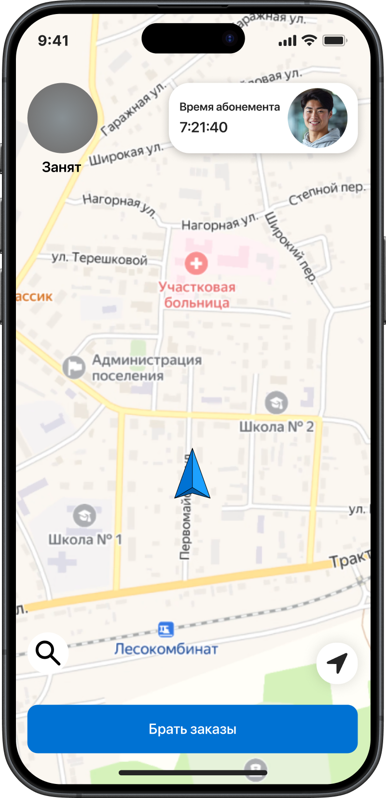
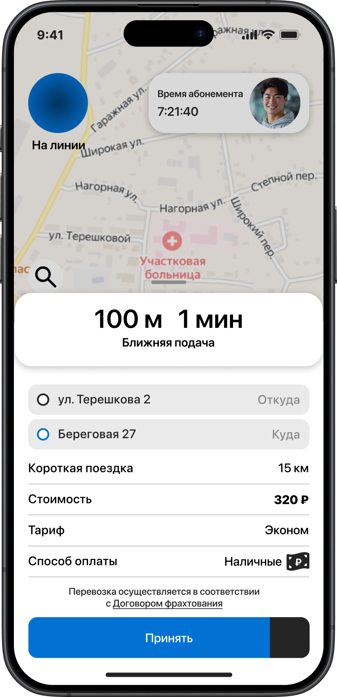
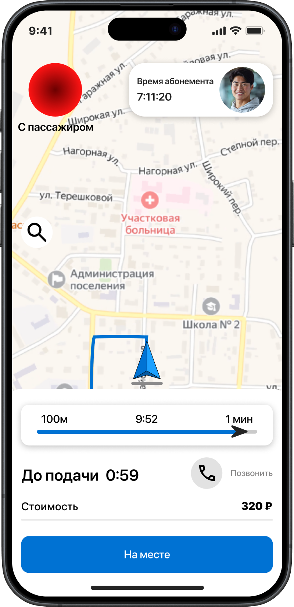
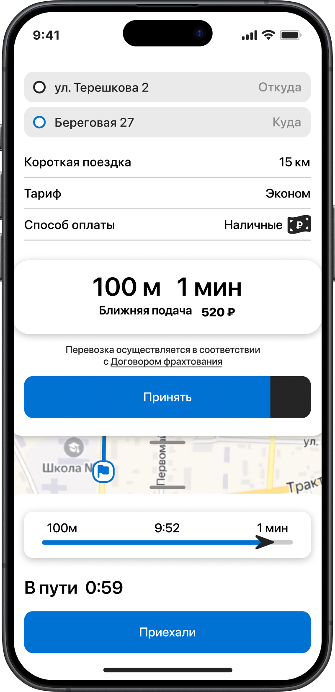
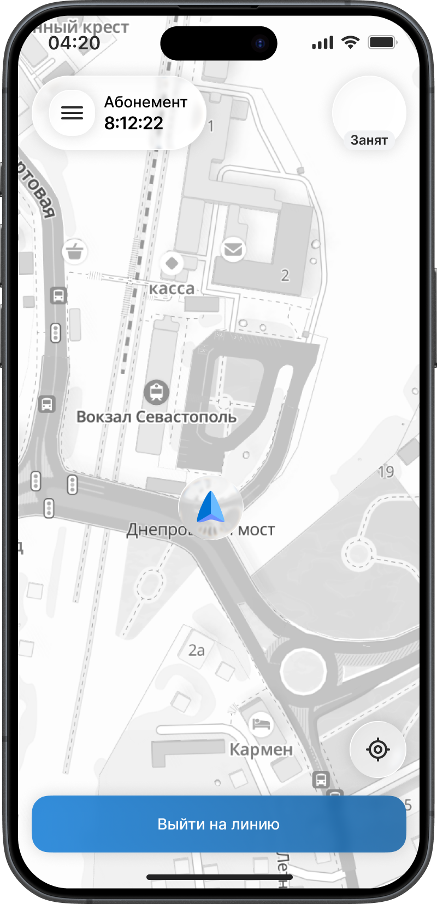
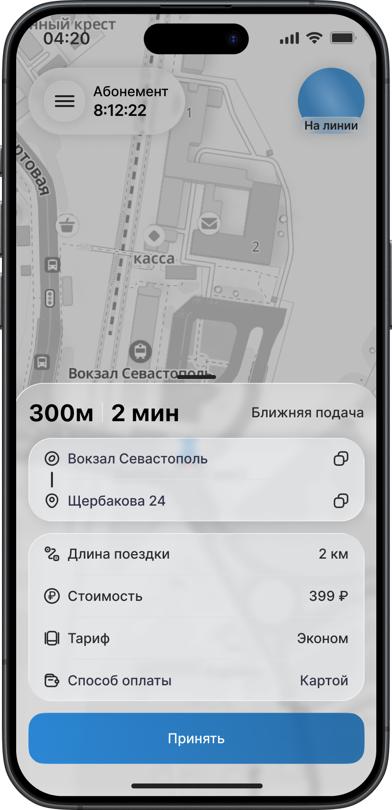
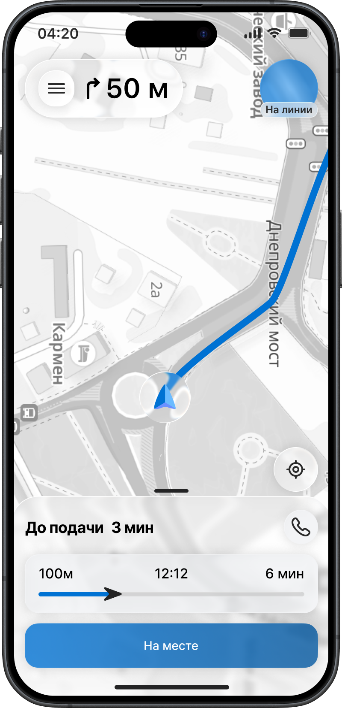
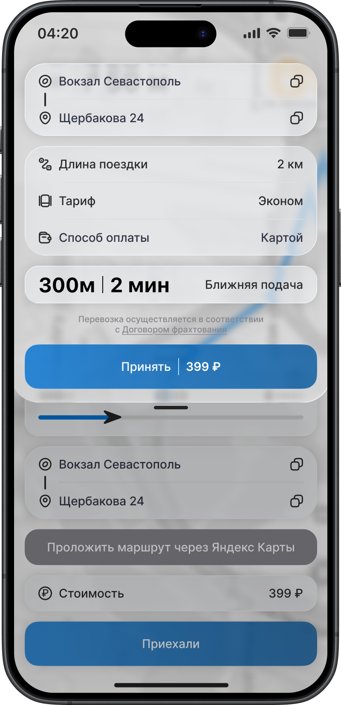
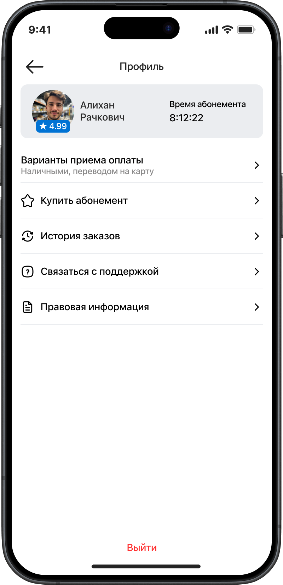
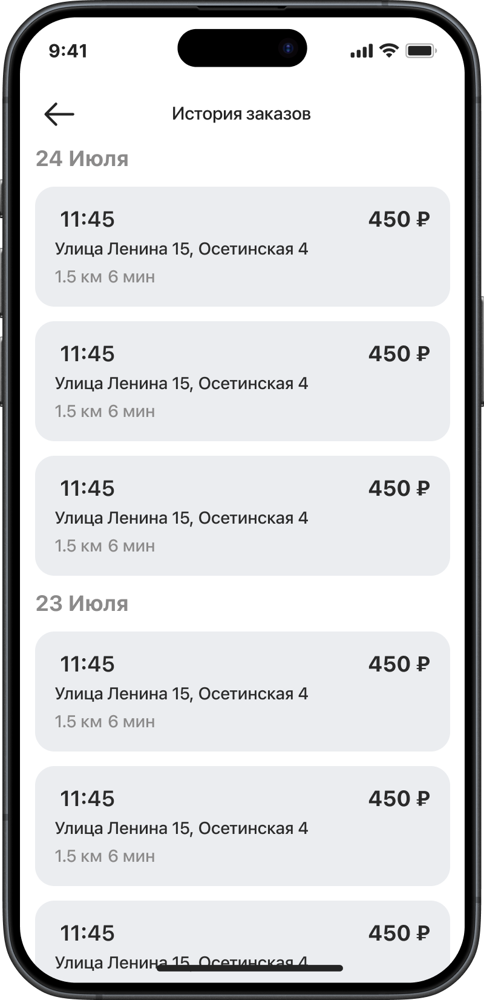
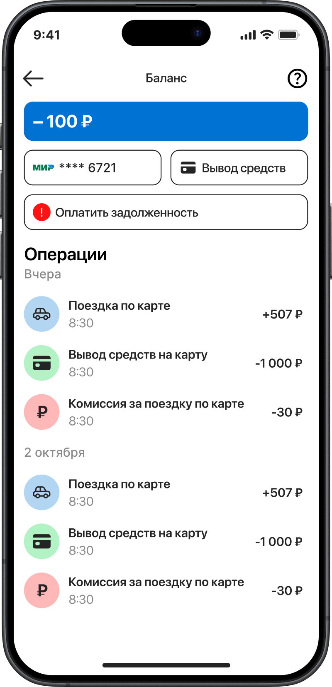
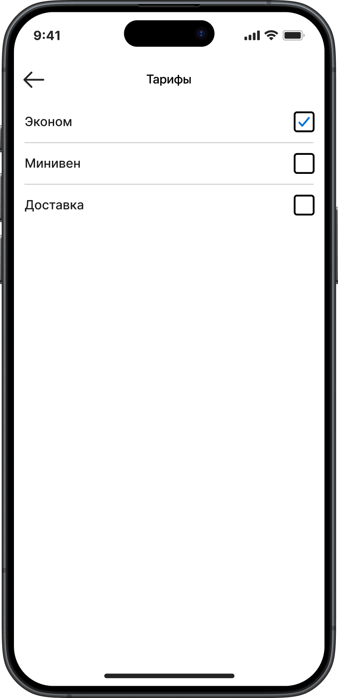
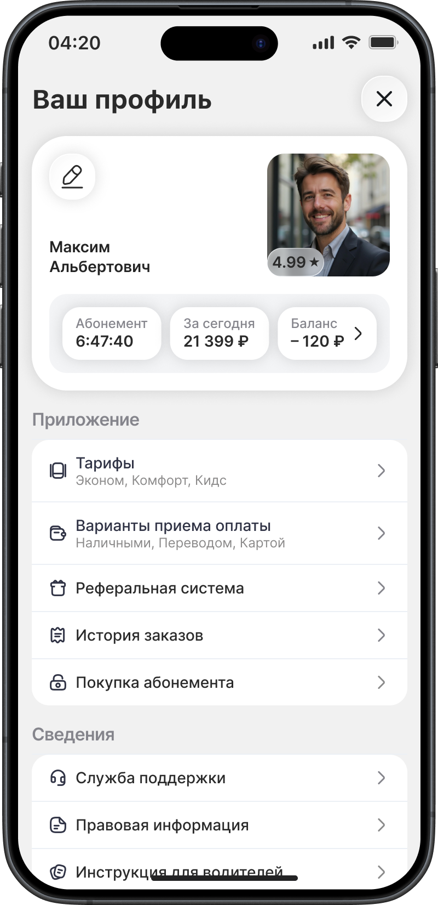
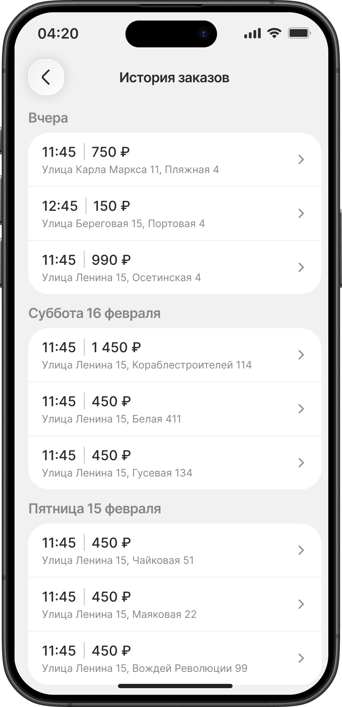
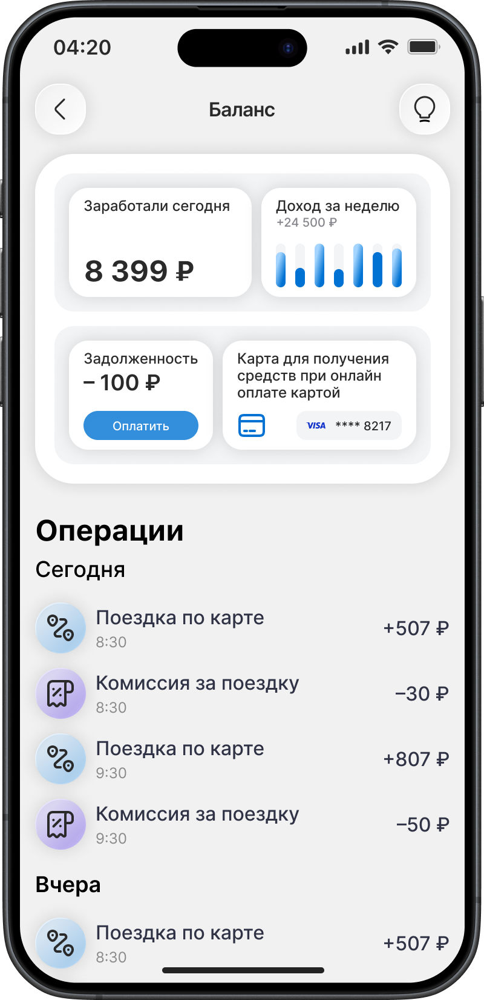
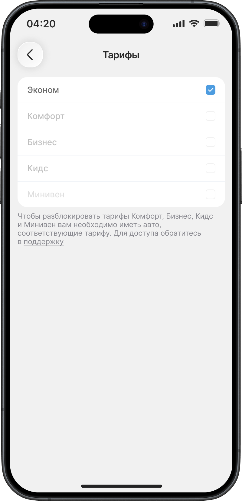
Lawber
Next case →
Silkway